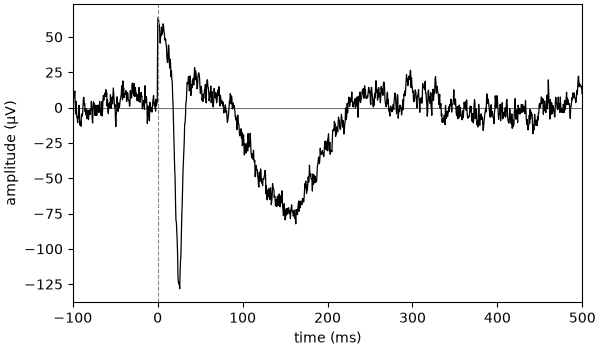
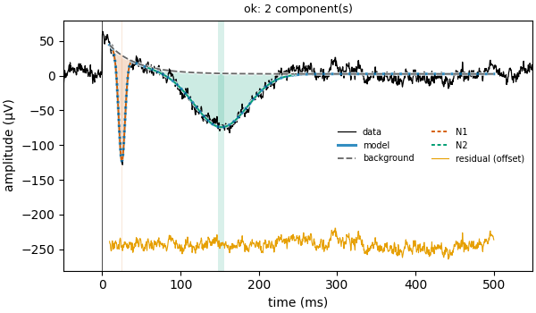
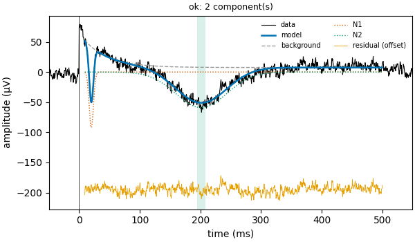
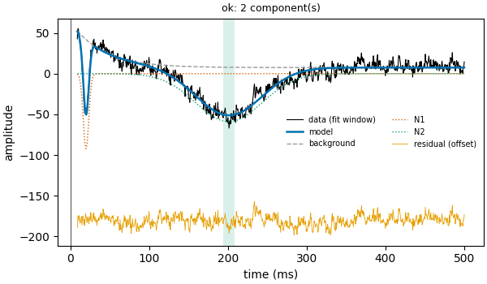
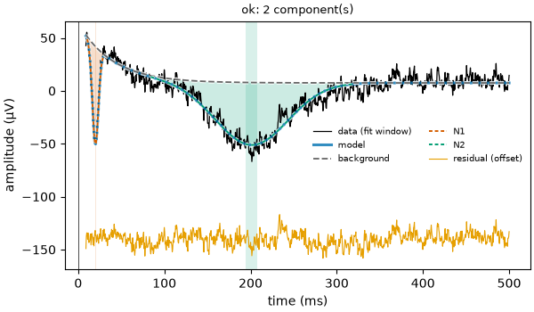

Note
Go to the end to download the full example code.
01: Model description¶
What evoparam does, shown on one example curve.
Introduction¶
When the brain receives a short stimulus (a flash of light, a sound, a tiny electrical pulse), the electrodes that record its activity show a small wave just after it. This wave is called an evoked response.
One response is hidden in the noise, so the stimulus is repeated many times and the recordings are averaged. What is left is one clean curve: time on the x-axis, voltage on the y-axis.
evoparam describes this curve with a few numbers. It looks for the bumps in it: when each bump happens, how high it is, and how wide it is.
In this first tutorial, we make an example curve, let evoparam describe it, and look at what the description means.
# Import what we need
from evoparam import (
fit_response,
gen_response,
plot_annotated_fit,
plot_fit,
plot_response,
report,
)
Making an example curve¶
To learn, it helps to start from a curve whose answer we already know.
gen_response makes one. Each bump is given by three numbers:
latency: when the bump peaks, in milliseconds (ms) after the stimulus;
amplitude: how high it is, in microvolts (µV); negative means it goes down;
width: how wide it is, in ms, measured at half its height.
Here we ask for two bumps that both go down: a sharp one at 25 ms and a broad one at 150 ms.
# Make an example curve with two bumps: [latency (ms), amplitude (µV), width (ms)]
times, signal = gen_response([[25, -150, 10], [150, -80, 80]], seed=3)
seed=3 fixes the random noise, so that you get the same curve each time you run this
page.
Let’s look at the curve. The stimulus happens at time 0 (the dashed line).
# Plot the curve, from 100 ms before to 500 ms after the stimulus
fig = plot_response(times, signal, xlim=[-100, 500], color="black")

Before 0, the curve only wiggles: that is noise. Just after 0 it jumps up and slowly comes back, then the two bumps go down, one sharp and one broad.
Describing the curve¶
Now we ask evoparam to describe it. report does everything in one line: it fits the
model, shows a summary and draws a figure.
"ccep" is a preset: a ready-made set of settings, here the one for responses to
electrical pulses.
# Fit the model and draw the figure
fit = report(times, signal, preset="ccep")
# Show the summary
print(fit)

==================================================================
evoparam - RESPONSE MODEL
fit window: 9 to 500 ms
background: exponential, time constant 35.4 ms
2 component(s) found:
label latency amplitude width
N1 25.0 ms -152.1 µV 9.5 ms
N2 151.9 ms -77.4 µV 79.2 ms
fit quality: R2 = 0.94, noise level = 7.4 µV
(latency: time of the peak; width: full width at half maximum)
==================================================================
evoparam found the two bumps we put in, with the right timing, height and width. It named them N1 and N2: N for a bump that goes down, then a number in order of time.
In the figure, the black line is our curve and the thick blue line is the model. The grey dashed line is the background. Each coloured area is one bump: it fills the space between the background and the curve. The orange line at the bottom is what is left over.
The colour of the areas can be changed with shade_color, or the areas turned off with
shade=False:
# The same fit, with grey areas
fit = report(times, signal, preset="ccep", shade_color="grey")

Reading the numbers on the curve¶
plot_annotated_fit draws each number where it is read on the curve:
the dot is the peak of the bump;
the arrow goes from the background to the peak: its length is the amplitude;
the dotted line down to the time axis gives the latency;
the bar across the bump, at half its height, is the width.
# Draw the model with its numbers
fig = plot_annotated_fit(fit)

Conceptual overview¶
evoparam sees every curve as the sum of three parts.
The background. A slow change that is not a bump. Here it is the jump right after the pulse that slowly fades away: the recording equipment recovering from the pulse. If it were not removed, it would look like an extra bump or change the size of the real ones.
The bumps. Each bump has a simple shape (a bell curve) and is described by its latency, amplitude and width. These numbers are usually what we want to measure.
The noise. Whatever is left: small random wiggles. evoparam measures how big they are from the part of the curve before the stimulus, where there is nothing but noise.
Note
evoparam decides on its own how many bumps there are. It adds them one at a time and keeps a new bump only if it explains the curve clearly better than without it. This is why it does not invent a bump in every small wiggle of the noise.
Mathematical description¶
Written as a formula, the model is
\(y(t)\) is the curve, the voltage at time \(t\).
\(b(t)\) is the background.
\(s_k(t)\) is the shape of bump number \(k\): a bell curve with a height of 1, centred on its latency and as wide as its width.
\(A_k\) is the amplitude of bump \(k\), which scales its shape to its real height.
\(K\) is the number of bumps, and \(\sum\) means “add them all up”.
\(\varepsilon(t)\) is the noise.
Fitting the model means finding the numbers that make the sum of the parts as close as possible to the curve.
Trying another curve¶
The same lines work on any curve. This one has an earlier, smaller first bump, a later second bump and a stronger background.
This time we do the steps one by one: fit_response only fits the model (no figure),
print shows the summary and plot_fit draws the result. report is these three
steps in one line.
# Two other bumps, and a background given as [height (µV), how fast it fades (ms)]
bumps = [[20, -100, 8], [200, -50, 100]]
times2, signal2 = gen_response(bumps, background=[80, 40], seed=1)
# Fit the model, without drawing
fit2 = fit_response(times2, signal2, preset="ccep")
# Show the summary, then draw the fit
print(fit2)
fig = plot_fit(fit2)

==================================================================
evoparam - RESPONSE MODEL
fit window: 9 to 500 ms
background: exponential, time constant 40.0 ms
2 component(s) found:
label latency amplitude width
N1 20.0 ms -92.2 µV 8.3 ms
N2 201.3 ms -59.0 µV 98.8 ms
fit quality: R2 = 0.92, noise level = 7.1 µV
(latency: time of the peak; width: full width at half maximum)
==================================================================
Note
Try it yourself: change the numbers given to gen_response (move a bump, make it
smaller, add more noise with noise=20) and fit it again. When the bumps get
small compared to the noise, evoparam starts to miss them, as anyone would.
Conclusion¶
evoparam describes a curve as a background, a few bumps and some noise, and gives the timing, height and width of each bump. In the next tutorials, we look at the settings of the model and use it on real recordings.
Total running time of the script: (0 minutes 3.190 seconds)